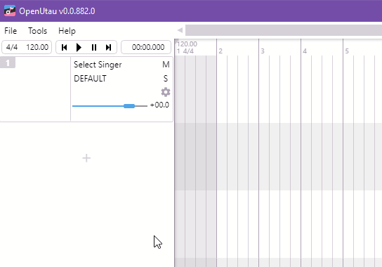
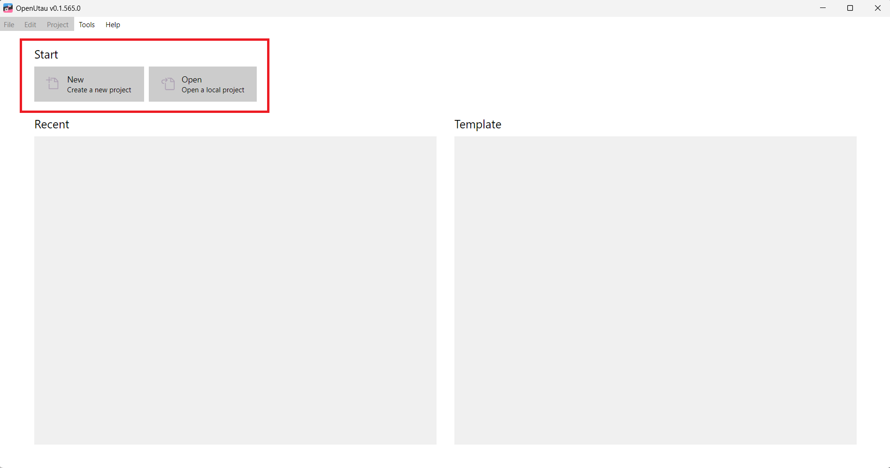
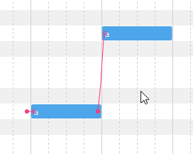

零门槛上手 OpenUtau｜第一次做歌声合成就选它
完全不懂也能看懂的 OpenUtau 入门指南——从下载到跑出第一句歌声，五分钟路径、三个必玩功能、三个高频踩坑点，一步步带你进入歌声合成的世界。
这篇能带你从完全不懂到把一段旋律变成真正的歌声，不需要任何乐理基础，也不需要听过 UTAU、VOCALOID 这些前辈——你只要会用鼠标拖东西、会打汉字就行。
它到底是干嘛的
想象一下：你脑子里有一段旋律，想让一个虚拟歌手把它唱出来——不是 AI 生成一段现成的歌，而是你自己写旋律、自己填歌词、自己选"歌手"，然后让它按你的要求唱。这就是歌声合成。
OpenUtau 就是做这件事的工作台，它的官网上资料很全。它是开源免费的，兼容 UTAU 的所有声库（那些社区攒了十年的虚拟歌手声音），还原生支持 VOCALOID 工程文件导入，甚至自带了 DiffSinger 这种用神经网络合成的新引擎——相当于你手里同时有了经典歌手录音棚和 AI 新一代录音棚。
五分钟上手：从下载到第一句歌声
第一步：拿安装包
去它的官方下载选对应你系统的版本就行。Windows 用户推荐直接下带 DiffSinger 的打包版，省得后面单独装依赖。
第二步：装声库
OpenUtau 本身不带声音——"歌手"的声音要你自己装。最简单的方式：从 UTAU 社区或相关论坛下一个声库的 zip 文件，直接拖 zip 到 OpenUtau 主窗口，会弹出一个安装对话框，点确定就完了。
拖 zip 安装声库就是这么简单。

第一次的话挑个口碑好的免费声库就行，比如重音テト（UTAU 社区的"官方吉祥物"），或者随便找个中文 DiffSinger 声库试试。
第三步：写音符
打开 OpenUtau，点 File → New Project 新建一个工程，然后双击 Piano Roll（钢琴卷帘）里的空白轨道——Piano Roll 就是你的"谱子编辑器"，横向是时间轴，纵向是音高。

用顶部工具栏里的笔工具在 Piano Roll 里点几个方块——每个方块就是一个音符，横向拖改变时长，纵向拖改变音高。随便画个两三句旋律就行，不用好听。
第四步：填歌词
音符画好之后，双击音符，在弹出的输入框里填歌词。中文 DiffSinger 声库可以直接打汉字，也可以打拼音（看声库配置）；日文声库打假名；英文声库打单词或音标。
第五步：试听
按空格键播放。如果一切顺利，你就能听到你选的那个"歌手"把你写的旋律唱出来了！
上手后先玩这三个功能
一、试试 DiffSinger 引擎
默认的 Classic 引擎音质一般，但如果你装了 DiffSinger 声库，可以切到 DiffSinger 引擎——音质自然度提升好几个档次，而且还不会像 Classic 那样让你头疼重采样器配置。
在轨道头最上层的下拉菜单（引擎选择）里选 DiffSinger，然后在 Singer 下拉里选你装的 DiffSinger 声库，音素器会自动变成 DIFFS 系列的对应语言。这时候你会发现齿轮图标的重采样器选项消失了——不用管，DiffSinger 走自己的端到端管线，不需要那些配置。想知道 DiffSinger 那十来种曲线参数具体怎么调，openutau文档里有完整的参数说明。
二、导入一段 VSQX 体验转换魔法
如果你手上有 VOCALOID 做过的工程文件（.vsqx 格式），直接 File → Open 打开它。OpenUtau 会自动把音符、歌词、甚至表情参数（颤音、力度、滑音）全部转换成 OpenUtau 格式——VOCALOID 的工程能在 OpenUtau 里继续编辑，这一点是 UTAU 原版做不到的。
转换完记得在每条轨道顶部重新选一下声库和音素器——VSQX 里写的是 VOCALOID 虚拟歌手的名字，和你本地装的声库对不上，需要手动匹配。
三、在 Piano Roll 里拉滑音
Piano Roll 里每个音符底部有个小三角，按住往下拖就是滑音（Pitchbend）。或者打开 Pitchbend 编辑模式，在音符的音高线上画曲线——画个波浪线就能做出自然的颤音效果，比单纯的音符好听多了。

小白的三个常见疑问
Q1：我装了重采样器，但齿轮图标下拉里找不到？
这个问题高频到几乎每个人都会碰到。排查清单：
- 重采样器的 .exe 文件是不是真的放在了 Resamplers 文件夹里面？外层目录不算。
- 是不是下了 Linux 或 macOS 版本的 .exe？Windows 只能用 Windows 版本。
- 某些重采样器除了 .exe 还需要配套的 .dll 或配置文件，检查 zip 里所有东西是不是都解压了。
- 有没有拖 .exe 到窗口安装？OpenUtau 从 0.1.119 版本起支持直接拖拽安装，比手动放文件夹省事。
Q2：DiffSinger 渲染完完全静音？
按顺序检查四件事：
- vocoder 装了吗？Tools → Singers 里能看到 vocoder 条目才算装好。Windows diffsingerpack 版通常自带，macOS 和 Linux 需要单独下。
- 引擎是不是选了 DiffSinger？别误选 Classic 或 WORLDLINE-R。
- 音素器是不是 DIFFS 系列？别选 JA VCV、EN VCCV 这些 Classic 音素器。
- 歌词输入格式对不对？中文声库用汉字还是拼音要看声库的 character.yaml 配置。
Q3：我以前在 UTAU 下的老声库能用吗？
能用，而且 OpenUtau 比 UTAU 原版更宽容。UTAU 原版强制要求所有声库直接放在 Singers 文件夹第一层，不能建子目录分类；OpenUtau 会递归扫描所有子目录，你可以按语言、引擎类型随便分类——只要文件夹里有 character.txt 或 character.yaml 就能识别。唯一要注意的是：如果声库用了非标准的 alias 后缀或非常特殊的音频格式，可能需要手动调整一下 oto.ini。
接下来去哪
恭喜你已经迈出了歌声合成的第一步。想继续深入的话，去看详细的参数说明和声库推荐——曲线参数怎么画、不同重采样器的音色差异、DiffSinger 模型的训练与导入，这些进阶内容官方文档里都有现成的指南。歌声合成社区有十年积累的 UTAU 老声库和每天都在增长的 AI 声库，OpenUtau 把这两个生态连在一起了，你可以慢慢探索自己喜欢的风格。